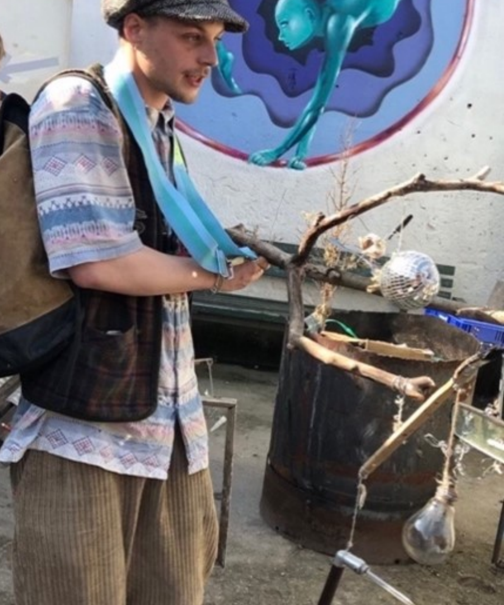

Peaceful Demonstrator Study
Public art and artistic research programme investigating how neutral, confirmative, and paradoxical civic messages shape attention, reflection, and public engagement.
CV & Research Profile · 2026
Psychologist, empirical aesthetics researcher, and scientific artivist based in Berlin. Tobias Eder develops artistic interventions as experimental paradigms for studying aesthetic experience, attention, meaning making, and behaviour.

01
Tobias Eder works at the intersection of empirical aesthetics, cognitive psychology, public-space research, and artistic intervention.
His projects use discarded objects, sculptural figures, mobile structures, and participatory situations to create experimentally useful aesthetic encounters. These paradigms make it possible to investigate perception, agency, semantic processing, reflection, and public engagement under conditions that retain material and social relevance.
02
Public art and artistic research programme investigating how neutral, confirmative, and paradoxical civic messages shape attention, reflection, and public engagement.
Six interactive miniature city worlds built inside discarded Berlin rooftop windows. Found materials, light, mechanics, political fable, and grassroots urban imagination form a transformation story.
Human powered mobile installation made from reflective discarded materials, connecting physical reflection, personal effort, and sustainability related self reflection.
Participatory public installation at Tempelhofer Feld. Visitors contributed found or self produced rubbish to an evolving collective composition.
03
2025 ALLESANDERSSTADT, Haus der Statistik, Berlin · WaMü Kollektiv
2025 Alternative, 90mil, An der Michaelbrücke 1, Berlin · Yanaverse
2024 WaMüLage, long term public installation, Tempelhofer Feld, Berlin · WaMü Kollektiv
2023 Tendermesh, GlogauAIR, Berlin
2023 Tendermesh, 90mil, An der Michaelbrücke 1, Berlin
2022 Ugly and Exciting, 637 Wilson Avenue, Brooklyn, New York
2021 Freedumb, Zemin Gallery, Berlin
04
Self-initiated public-space pilot conducted in 2024 and 2025. The current programme proposes a field experiment on public micro-engagement and a follow-up EEG experiment examining the processing of paradoxical and confirmative civic messages.
Research project at Humboldt Universität zu Berlin examining how emotional word valence shapes positivity and negativity bias across interactions with human, android, and robotic agents. Methods include EEG experiments, fMRI analysis in MATLAB, and eye tracking analysis.
Research internship at the Center for Mind Brain Sciences in Rovereto, Italy, in the research group of Professor Carlo Miniussi. The internship focused on cognitive neuroscience, brain stimulation, neurophysiological methods, experimental design, data collection, and analysis.
Interdisciplinary workshop exploring artistic methods as tools for scientific inquiry and public engagement.
05
October 2024 to November 2026 M.Sc. Psychology, Humboldt Universität zu Berlin
September 2019 to February 2023 B.Sc. Psychology, Hochschule Fresenius, Berlin
September 2021 to January 2022 Exchange studies, Berkeley College and Pace University, New York
06
Co founder and artist of WaMü Kollektiv · “Was ist Müll?” · “What is rubbish?”
WaMü encourages citizens to beautify the environment through art and to imagine urban development from the grassroots up through sustainable, creative recycling. The collective works across sculpture, painting, fashion, music, and theatre, with a consistent focus on sustainability, overconsumption, artistic spaces, and social discourse.
07
Available for research, artistic, academic, and institutional collaborations.